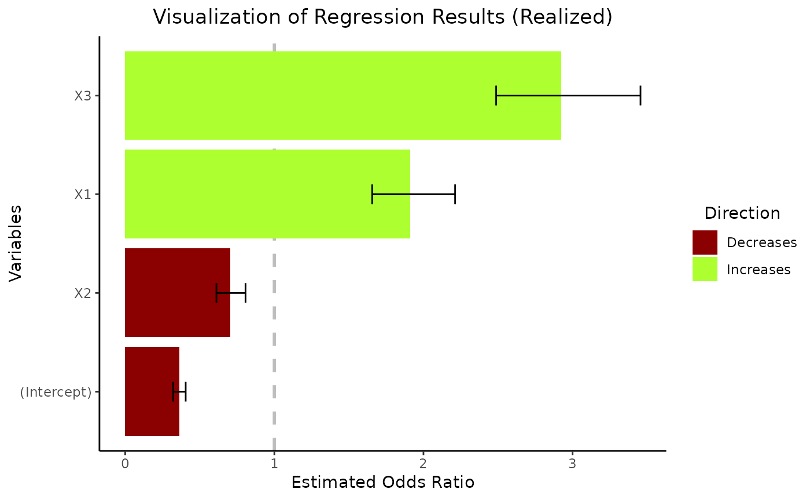

Visualize Regression Coefficients Within the Context of Empirical Data
vis_reg.RdTypically, regression coefficients for continuous variables are interpreted on a per-unit basis and compared against coefficients for categorical variables. However, this method of interpretation is flawed as it overlooks the distribution of empirical data. This visualization tool provides a more nuanced understanding of the regression model's dynamics, illustrating not only the immediate effect of a unit change but also the broader implications of larger shifts such as interquartile changes.
Arguments
- object
A fitted model object, expected to be one of the following classes:
lm: Linear Models.glm lm: Generalized Linear Models.elnet glmnet: Regularized Linear Models.lognet glmnet: Regularized Logistic Models.fixedLassoInf: Inference for the lassso for the linear models.fixedLogitLassoInf: Inference for the lassso for the logistic models.
- ...
Additional parameters.Please refer to details.
Value
A list with the following components:
$PerUnitVis: Aggplotobject that visualizes regression coefficients on a per-unit basis$RealizedEffectVis: Aggplotobject that visualizes regression coefficients on a basis of realized effect calculation.$SidebySide: Agrobobject containing both visualizations side-by-side.
Details
The following additional arguments can be passed:
CI: A logical value indicating whether to include Confidence Intervals.The default is
FALSE.For
fixedLassoInforfixedLogitLassoInfclasses it is set toTRUE.confint()is used to generate CIs for thelmandglm lmclasses.If CIs are desired for the regularized models, please, fit your model usingfixedLassoInf()function from theselectiveInferencepackage following the steps outlined in the documentation for this package and pass the object of classfixedLassoInforfixedLogitLassoInf`.
x_data_orig: Original non-centered and non-scaled model matrix without intercept.Please, pass the model matrix when CIs desired for
fixedLassoInfand/orfixedLogitLassoInfobject classes with penalty factors.For objects fitted without penalty factors this argument is not required as original data can be reconstructed from the object passed.
intercept: A logical value indicating whether to include the intercept.The default is
FALSE.For the regularized models it is set to
FALSE.
title: Custom vectors of strings specifying titles for both plots.alpha: A numeric value between 0 and 1 specifying the significance level.The default is 0.05.
palette: Custom vector of colors to highlight the direction of estimated regression coefficients or Odds Ratio.Grey scale is implemented by default.
Values at low and high ends of the grey scale palette can be specified.
start: grey value at low end of palette.The default value is 0.5.
end: grey value at high end of palette.The default value is 0.9.
eff_size_diff: A vector specifying which values to utilize for realized effect size calculation.It is applied to all independent variables. By default it is c(4,2) which is Q3 - Q1. The following coding scheme is used:1 is the minimum.
2 is the first quartile.
3 is the second quartile.
4 is the third quartile.
5 is the maximum.
round_func: A string specifying how to round the realized effect size.Can be either "floor", "ceiling", or "none".
The default value is "none".
glmnet_fct_var: names of categorical variables for regularized models.Glmnet treats all variables as numeric.
If any of the variables utilized are, in fact, categorical, please, specify their name(s).
Please, note that that by default
model.matrix()will create k-1 dummy variables in lieu of k levels of a categorical variable. For example,if you have a factor variable called "sex" with two levels 0 and 1, and 0 being the base level,mode.matrix()will create a dummy variable called "sex1". Please, utilize the names created bymode.matrix()here and not the original factor name.
Please note the following:
Only
Gaussianandbinomialfamilies are currently supported.Certain steps should be followed in order to produce Confidence Intervals for the regularized models. Please, refer to the vignette for the
vis_reg()function and the documentation of theselectiveInferencepackage.Penalty factor of 0 is not currently supported and no Confidence Intervals will be produced in this case.
See also
lmfor linear models.glmfor generalized linear models.glmnetandcv.glmnetfor lasso and elastic-net regularized generalized linear models.model.matrixfor design matrices.ggplotfor ggplot objects.arrangeGrobfor grobs, gtables, and ggplots.fixedLassoInffor post-selection inference.
Examples
# Set seed for reproducibility
set.seed(38)
# Set the number of observations
n = 1000
# Generate predictor variables
X1 = rnorm(n)
X2 = rnorm(n)
X3 = rnorm(n)
# Define coefficients for each predictor
beta_0 = -1
beta_1 = 0.5
beta_2 = -0.25
beta_3 = 0.75
# Generate the latent variable
latent_variable = beta_0 + beta_1 * X1+ beta_2 * X2 + beta_3 * X3
# convert it to probabilities
p = pnorm(latent_variable)
# Generate binomial outcomes based on these probabilities
y = rbinom(n, size = 1, prob = p)
# Fit a GLM with a probit link
glm_model <- glm(y ~ X1 + X2 + X3, family = binomial(link = "probit"),
data = data.frame(y, X1, X2, X3))
# Specify additional parameters and Plot Odds Ratio for the Realized Effect
vis_reg(glm_model, CI=TRUE,intercept=TRUE,
palette=c("greenyellow","red4"))$RealizedEffectVis
